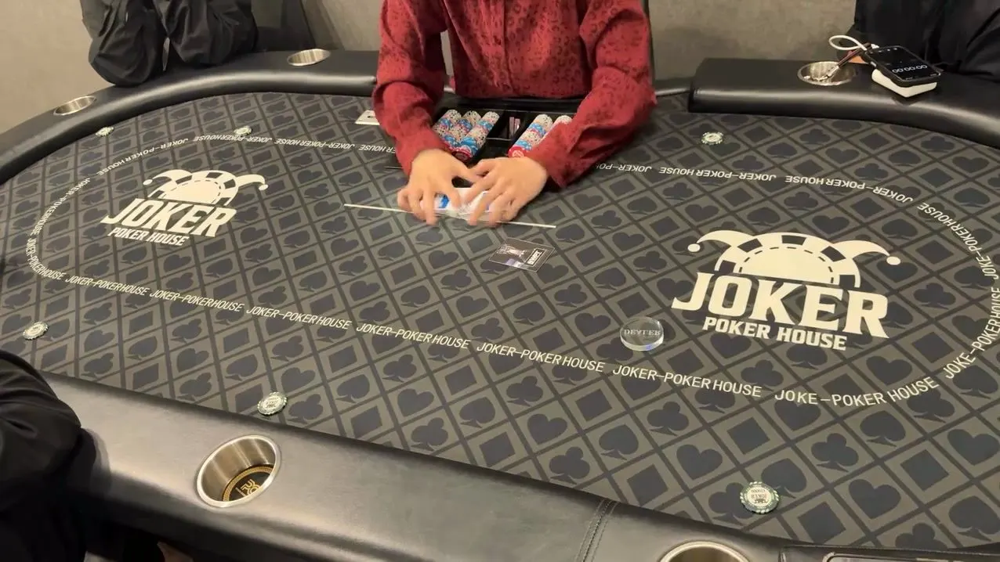
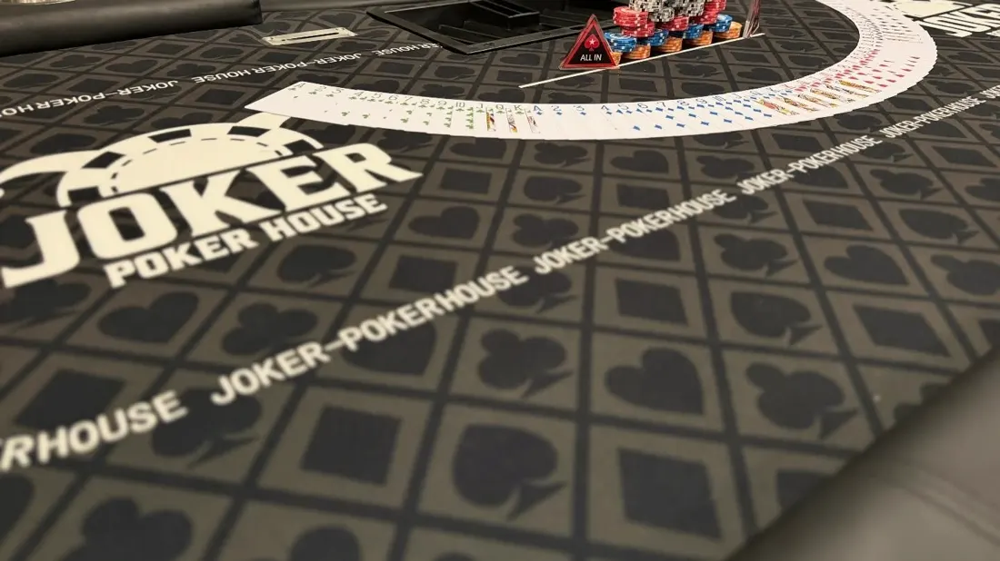

JOKER RING
- いつ
- 毎日 15:00から
- 入り方
- 好きな時間に座って、好きな時間にやめられます
- 料金
- 持ち点ごとの料金

ポーカーをしたことがない方も、ひとりで来るのが不安な方も大丈夫です。来店から遊ぶまでを、順に案内します。
大橋駅から卓につくまでを、4つの順に並べました。
大橋駅の西口から徒歩2分。ラーメン屋さんの隣のマンションの階段を上がって、2階です。

入口を入ると受付カウンターがあります。料金や遊び方をご案内します。

「ルールがあやふや」「実際にプレイするのが不安」という方のための講習です。カードの強さから流れまで、手元のカードとチップを使って、スタッフがひとつずつお教えします。ひとりでも受けられます。

慣れるまでスタッフがそばでサポートします。おひとりでのご来店も大歓迎です。

ポーカーを始めたばかりの方だけが参加できる大会です。講習で覚えたことを、そのまま卓で試せます。
2026年11月時点の定番です。開催日は JOKER CLUB のスケジュールで確かめてください。
ポーカーは、いつでも座れる JOKER RING と、決まった時間に始まるトーナメントの2つです。ほかに、ブラックジャックとバカラも遊べます。
入場料は 1,000円（ソフトドリンク飲み放題付・